Linked docs
Show a Markdown file from the project's repo as a doc, read-only and always current. The README lives in one place.
Notes, tasks, boards and galleries, all plain Markdown on your disk. Git keeps the history, and Claude Code can pick up the work.
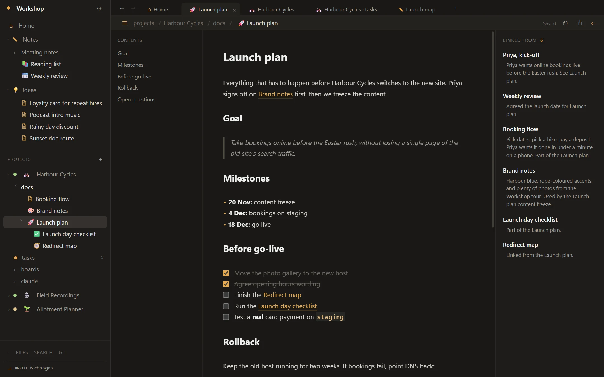
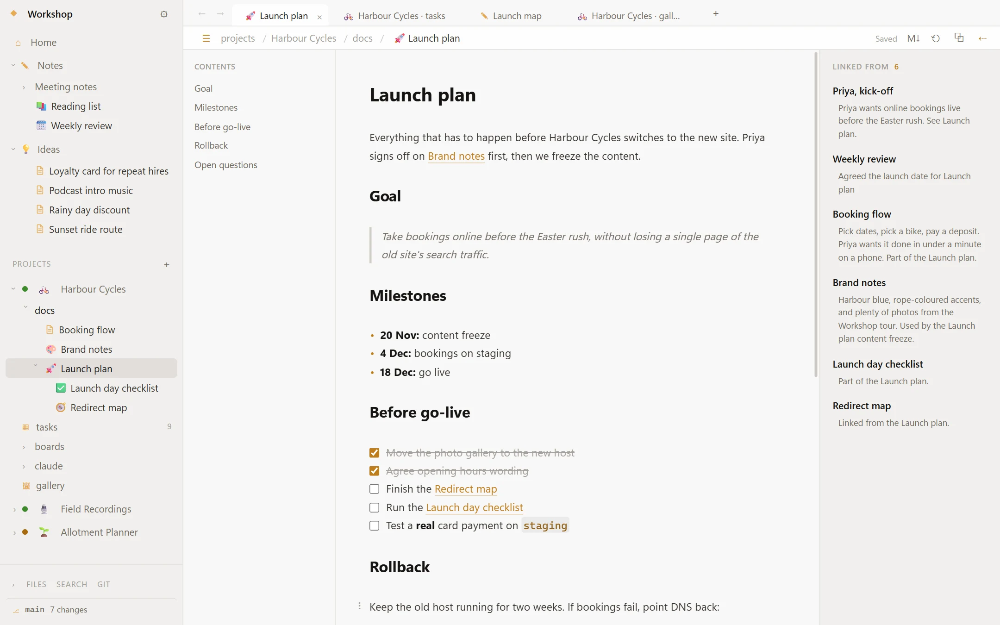
notes/
The marks stay hidden while you write. Ctrl+Shift+M shows the file as it is on disk.
![[Note]] shows another note inline.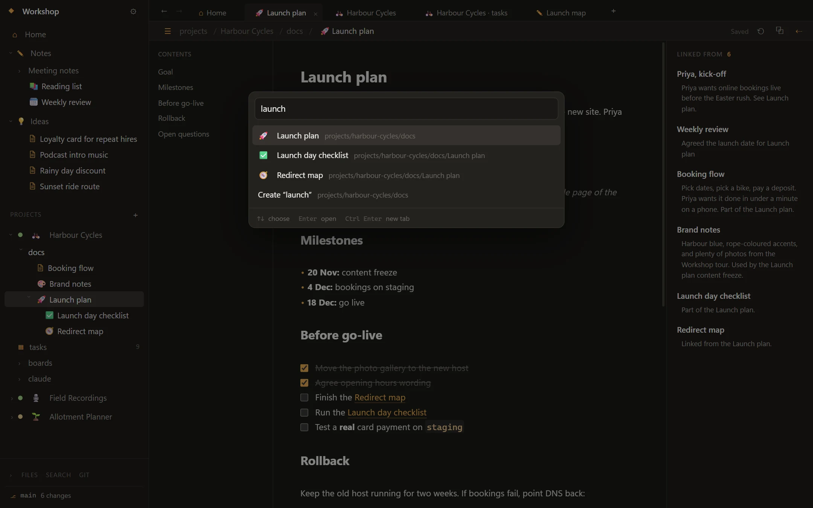
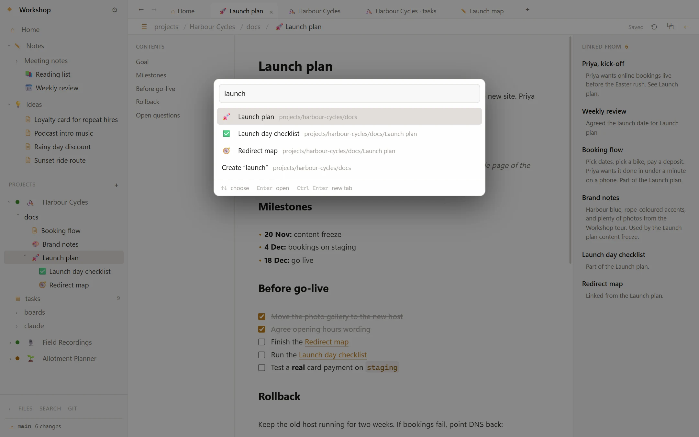
tasks/HC-005.md
Each task is one Markdown file, so it's in git and Claude can read it.
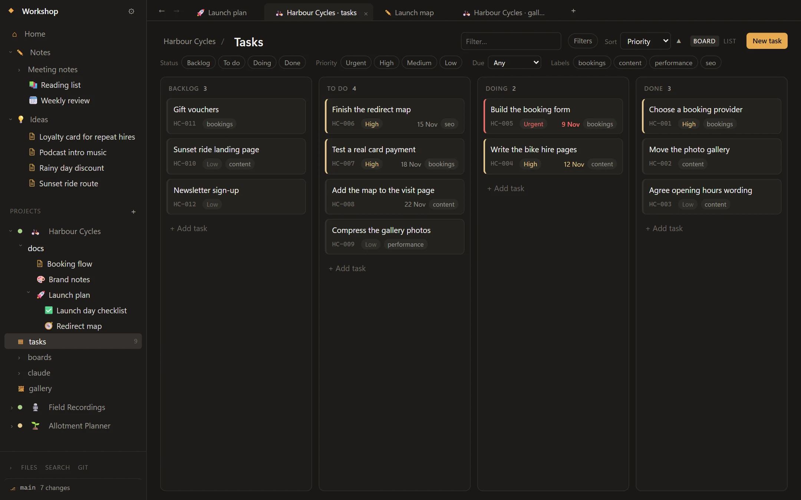
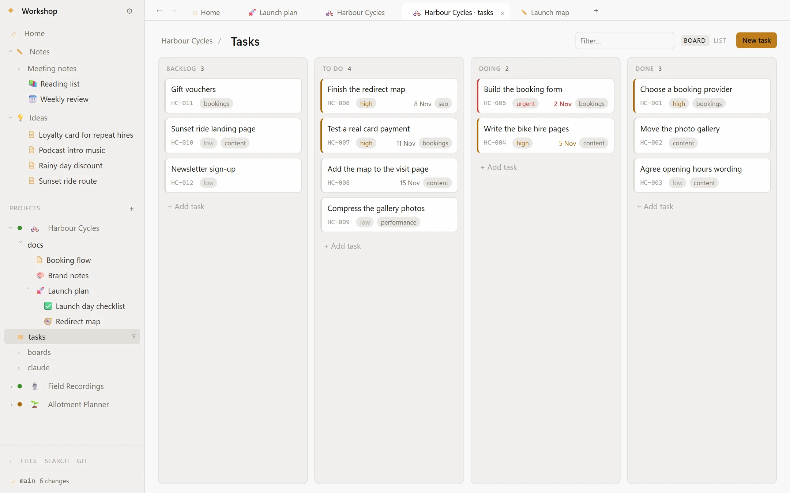
boards/Launch map.excalidraw
Excalidraw boards in every project. Drop a note or task on as a card, and the card opens it.
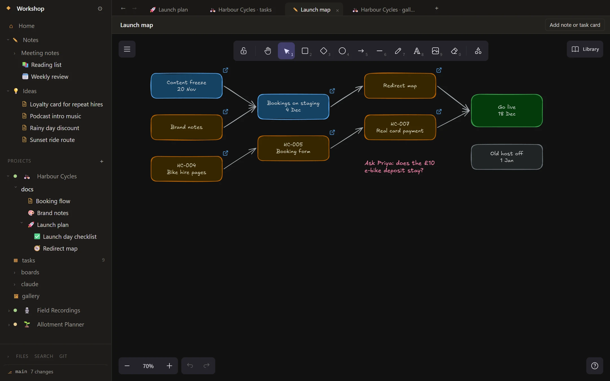
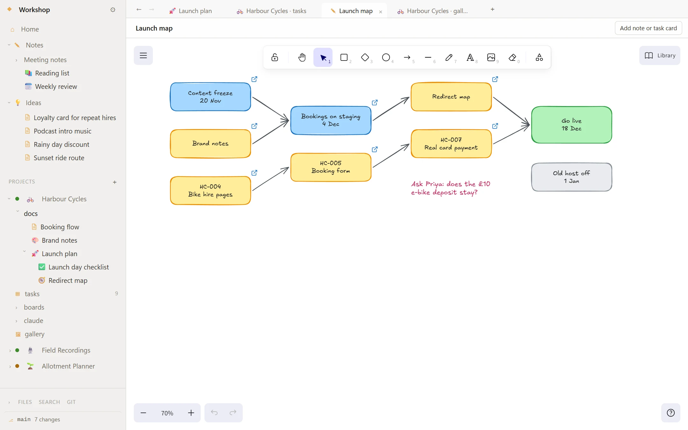
galleries:
Point a project at folders on your PC and browse them as one grid. Nothing is copied or changed.
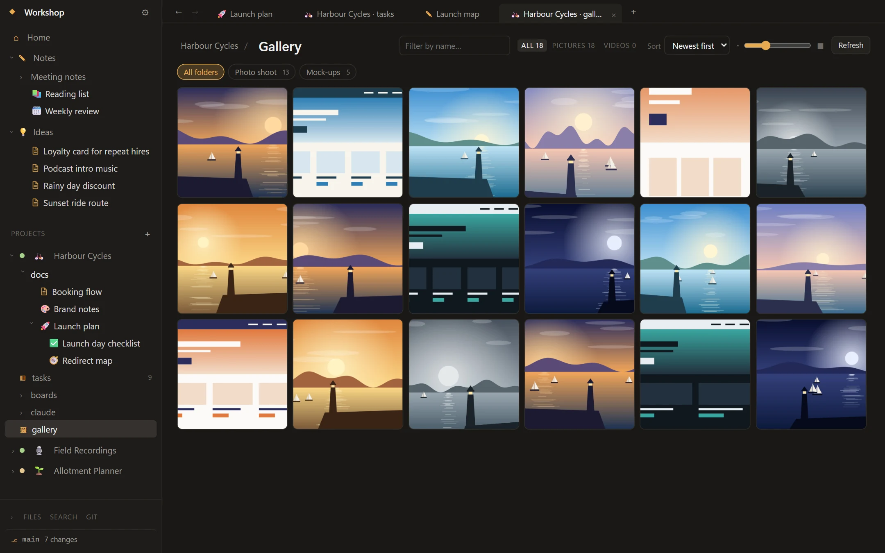
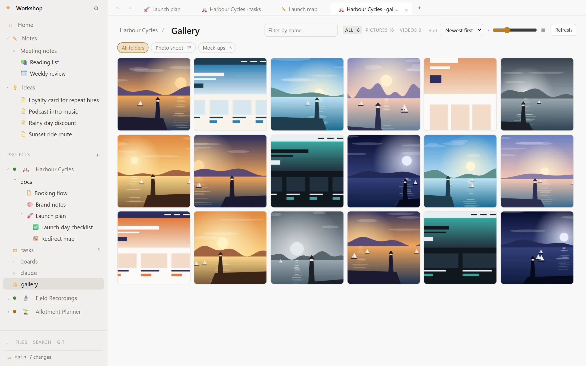
MCP connector · optional
Waypoint ships with a local MCP connector. Link a project to its repo and every Claude Code session there starts with your tasks, your docs and its own notes from last time.
Give a task the claude label, or send one to a new session from its card.
It moves the task to Doing, reads the docs it needs, writes the code, then marks it Done with a progress note.
Every change to the vault shows in a feed with Undo. The connector has no way to delete anything.
> work through your tasks waypoint_overview Harbour Cycles · 2 assigned to you Last session: booking form validation waypoint_update_task HC-007 → doing waypoint_read_note docs/Booking flow.md … writes and tests the code … waypoint_update_task HC-007 → done + progress note waypoint_create_task HC-013 Refunds need a receipt waypoint_log_session Card payments tested end to end
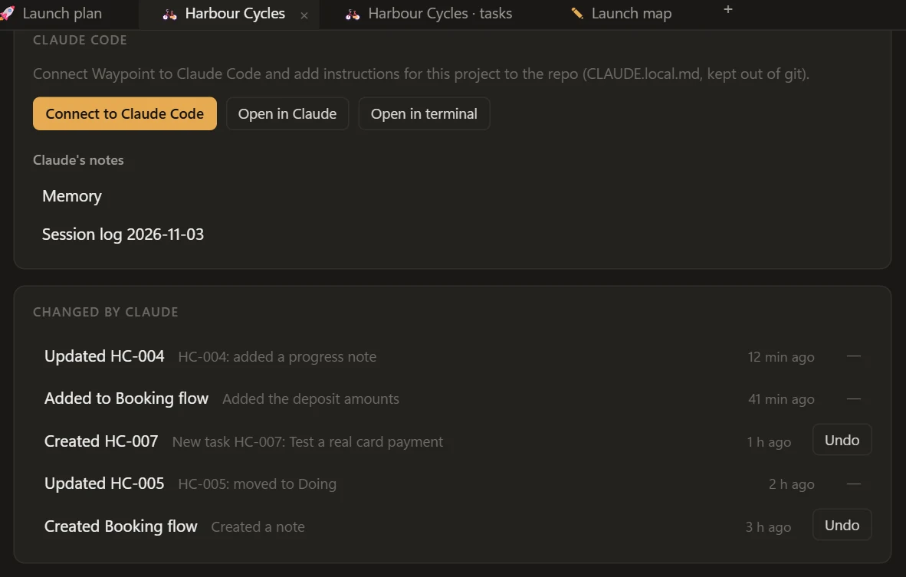
Claude keeps a memory and a dated log of each session as ordinary notes in the project. The next session reads them first, and so can you.
Decisions and how-tos go into the project's docs as it works, and bugs it finds but doesn't fix become tasks.
Search across notes, read any project, file an idea, rename or move pages with every link kept intact.
The connector runs locally and comes with the installer. Waypoint never calls Claude itself, and everything else works without it.
Works in the terminal and in the Claude desktop app's Code tab.
Show a Markdown file from the project's repo as a doc, read-only and always current. The README lives in one place.
History and diffs for any note. Optional auto-commit, and auto-push to a remote as a backup.
Ctrl+Alt+W in any app files a thought under Ideas. Ctrl+Alt+F searches from anywhere.
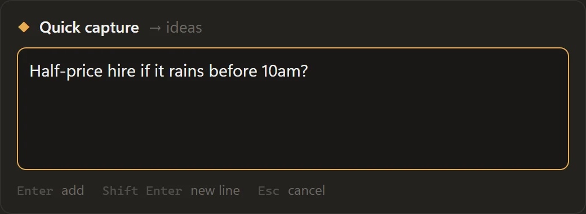
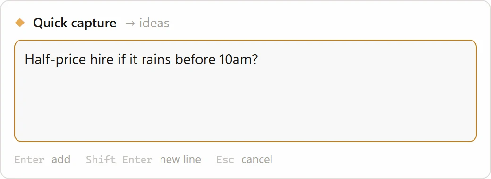
Overdue tasks and projects gone quiet get a banner or a Windows notification, in the hours you choose.
Docs, tasks, boards and gallery together, with the repo, links and bookmarks one click away.
Ctrl+P jumps to a note or creates it. Full-text search, tabs, and windows you can drag tabs into.
Light or dark, one accent colour for the app and another per project, your fonts and scale.
Optional daily zip snapshots to a folder you choose.
Open it in any editor, sync it with any git client. Stop using Waypoint and your notes are still Markdown files.
The installer isn't code-signed yet, so SmartScreen warns you the first time. Choose More info, then Run anyway.
Workshop/ ideas/ quick captures notes/ nest as deep as you like projects/ harbour-cycles/ project.md settings and overview docs/ nested pages tasks/ HC-001.md and so on boards/ .excalidraw canvases claude/ memory and session logs attachments/ pasted pictures .git/ if you turn on versioning